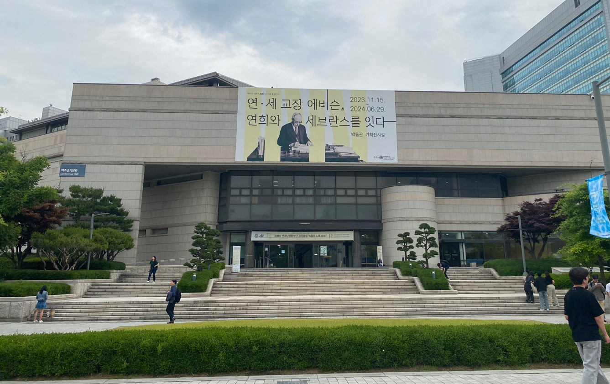

Home
Conference
Committees
Key dates & Deadlines
Call for Papers
Call for Abstracts
Call for Highlights
Register
RECOMB and Satellites
Travel Fellowships
Program
Program Schedule
Keynotes
Poster Guidelines
Venue
Main Conference Venue
Satellites Venue
Hotels
Airport Directions
Things to do @Cambridge
Local Transportation
History of Cambridge
Visa Information
Satellites
RECOMB-Seq
RECOMB-CCB
RECOMB-CG
RECOMB-Genetics
Sponsors
RECOMB Sponsors
Sponsorship Packages
About RECOMB
Venue - Main Conference
RECOMB 2024 will be held in
Kresge Auditorium

Transportation to Kresge Auditorium